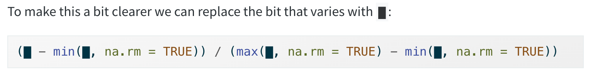

Functions: An introduction
Environmental Data Analysis and Visualization
Intro to functions
Recall that you use functions all the time
The code that comes before parentheses is the name of a function.
ggplot() is a function.
Recall that you use functions all the time
The code that comes before parentheses is the name of a function.
mean() is a function.
Recall that you use functions all the time
When you load a package, it loads all of the functions associated with that package.
However, sometimes there isn’t already an existing function to do what we want.
When that’s the case, we can write our own custom function.
Why are custom functions useful?
We want to rescale the values in each column to have a range from 0 to 1
Why are functions useful?
We want to rescale the values in each column to have a range from 0 to 1. Can you spot the mistake?
df |> mutate(
a = (a - min(a, na.rm = TRUE)) /
(max(a, na.rm = TRUE) - min(a, na.rm = TRUE)),
b = (b - min(a, na.rm = TRUE)) /
(max(b, na.rm = TRUE) - min(b, na.rm = TRUE)),
c = (c - min(c, na.rm = TRUE)) /
(max(c, na.rm = TRUE) - min(c, na.rm = TRUE)),
d = (d - min(d, na.rm = TRUE)) /
(max(d, na.rm = TRUE) - min(d, na.rm = TRUE)),
)# A tibble: 5 × 4
a b c d
<dbl> <dbl> <dbl> <dbl>
1 1 -0.485 1 0
2 0.313 0.416 0.492 1
3 0 -0.530 0 0.474
4 0.766 0.470 0.386 0.212
5 0.914 0.207 0.0439 0.403Why are functions useful?
In this example, we are copying and pasting basically the same code over and over.
The only thing we are changing is the column name.
Why is this a bad idea?

Writing a function: First determine which parts of your code are constant and which parts change.
What are we changing each time we run our code to rescale each of the columns?
Writing a function: First determine which parts of your code are constant and which parts change.
What are we changing each time we run our code to rescale the data?
To turn your code into a function you need three things:
- A name
- The arguments
- The body
To turn your code into a function you need three things:
- A name. Here we’ll use rescale01 because this function rescales the values in a vector to lie between 0 and 1.
To turn your code into a function you need three things:
- A name. Here we’ll use rescale01 because this function rescales the values in a vector to lie between 0 and 1.
- The arguments. The arguments are things that change each time you use the function. Our analysis above tells us that we have just one argument. We’ll call it
xbecause this is the conventional name for a numeric vector.
To turn your code into a function you need three things:
- A name. Here we’ll use rescale01 because this function rescales the values in a vector to lie between 0 and 1.
- The arguments. The arguments are things that change each time you use the function. Our analysis above tells us that we have just one argument. We’ll call it
xbecause this is the conventional name for a numeric vector. - The body. The body is the code that’s repeated across all the calls.
Test it out
Test it out
Looks good
Apply to original df
Apply to original df
# A tibble: 5 × 4
a b c d
<dbl> <dbl> <dbl> <dbl>
1 1 0.0447 1 0
2 0.313 0.946 0.492 1
3 0 0 0 0.474
4 0.766 1 0.386 0.212
5 0.914 0.737 0.0439 0.403